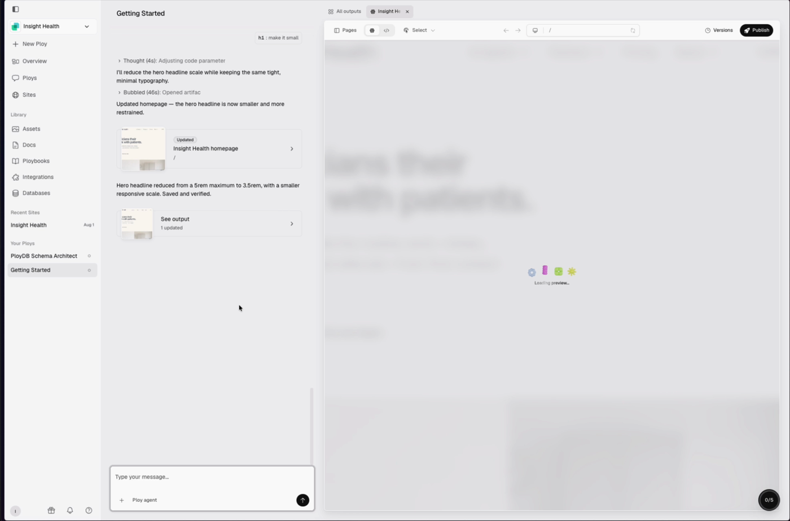
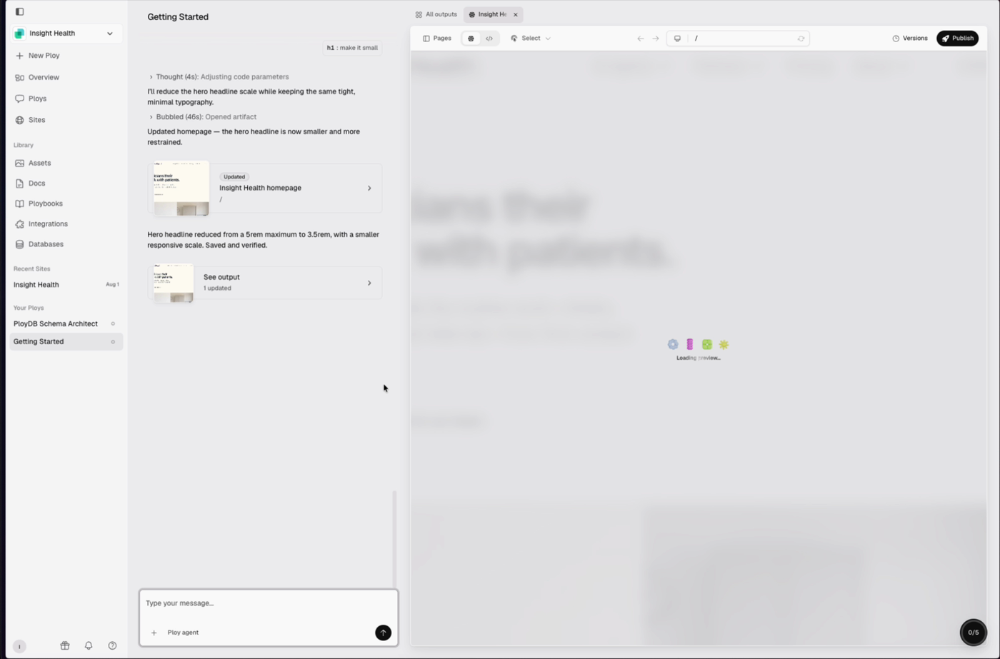
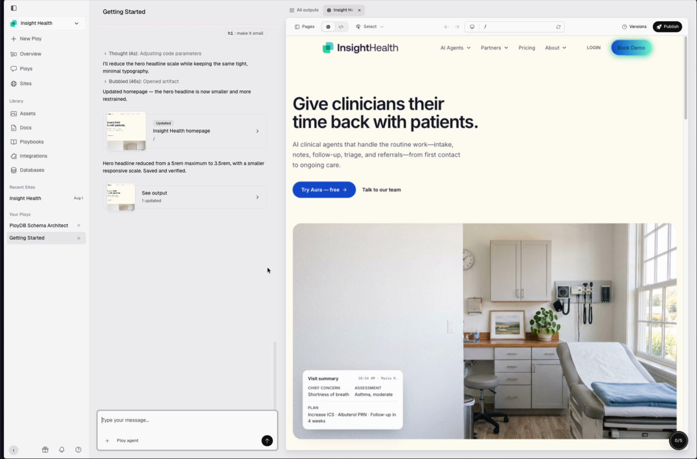

While the model generates an artifact (a LinkedIn ad, a landing page, an email), the right-hand output pane is blank. These four self-contained pages show what that pane could do instead. Each opens in a browser, loops until you press Finish generation, then plays the hand-off to the finished artifact. Replay restarts it.
Comet's frame is three stacked layers: a crisp bright line on the edge, a tight bloom inside it, and a wide faint haze, with the bright part travelling the perimeter. v3 rebuilds the glow that way and keeps the centre clean. The chip is squared to the frontend's 8px radius and reads "Agent is designing. Please wait." Each page has an A/B switch in the control bar.
Two soft light-bands drift slowly around the frame; light frosted veil; olive mark.
One bright beam with a long sage tail races the frame; deep-olive cinematic veil; cream mark.
Live canvas, aurora frame, white 8px chip with the mark as spinner.
Live canvas, beam frame, deep-olive chip with cream text.
Option 1's aesthetic kept, applied to the whole output pane, brand colours only. Two behaviours: the website blurs until it exists; the ad stays live but locked. Both carry a Comet-style perimeter glow in sage / cream / slate-teal. The React components and the single CSS file behind these previews are in handoff/, ready for the production app.
Backdrop blur over the pane, the Clue mark assembles and breathes, one line of copy, perimeter glow. Lifts on the canvas revision that carries the page.
Artwork visible and updating live. A frosted pill reads "Currently designing. Please wait to edit." with the mark as a spinner; a transparent shield swallows clicks; perimeter glow on the pane.
The three pieces of the Clue mark drift in, lock together, breathe, ease apart, and re-assemble. Behind it a slow "light on paper" drift. Calm, brand-led, no fake progress.
Closest to the Play reference: a frosted ghost of the artifact behind, and four brand segments (the three mark pieces plus a slate-teal ring) that pop in one after another, then each idles with its own motion.
The card becomes a wireframe of the artifact being made. Blocks draw in and fill as each generation step completes; a mark-shaped spinner and a step list say what is happening now. Most informative; shape changes per artifact type.
The artifact develops like a photograph: blurred and washed out at first, sharpening a notch per step, while a crescent progress arc grows around the mark. Progress-aware; the marketer feels it getting closer.
Five standalone SVGs of the current production mark and lockup, in a gallery page.
Frames from the recording. The previous page is blurred and desaturated, four 3D toys pop in one by one and idle, "Loading preview…" shimmers, then the blur clears and the new page fades in.



Frame-by-frame of the pop-in, 6 fps: play-glyph-stagger-6fps.png. Today's Clue output pane: clue-output-pane-today.png.